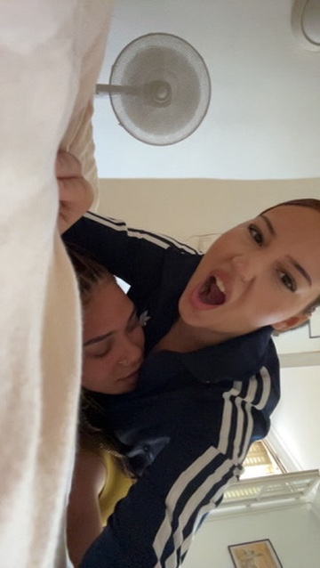

MERCI ! 🎉
Le pardon a été enregistré avec succès dans la base de données universelle.
promis, je ferai des efforts.

Avant de te demander quoi que ce soit, je veux te prouver que j'ai pris conscience de mes erreurs :
Pas d'excuses de ma part, pas de "oui mais". Juste moi qui assume.

Ce document certifie que Alice a pris conscience de son comportement désastreux envers Vae.
"Je sais que j'ai dépassé les bornes. J'ai été bête, et tu mérites beaucoup mieux que ça. Je te présente mes excuses les plus sincères."
Acceptes-tu ces excuses ?
Le pardon a été enregistré avec succès dans la base de données universelle.
promis, je ferai des efforts.